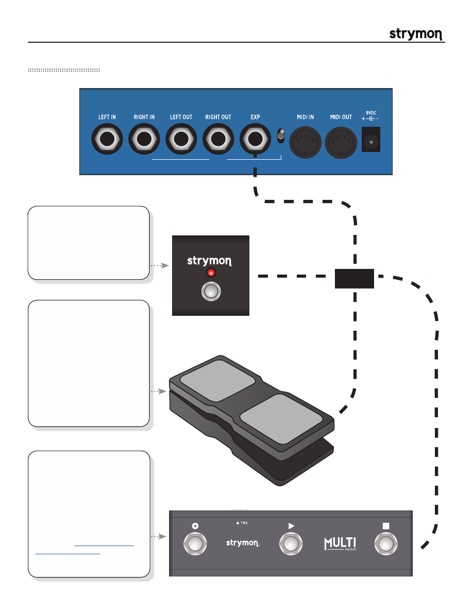

Mobius
-
User Manual
®
pg 5
EXP Connections
STEREO
IN/OUT
PRE /
POST
OUTPUT 2
INPUT 2
OR
®
TRS
®
TRS
Connect a standard TRS
expression pedal
for
continuous control over any
knob. To select the knob(s)
controlled by the expression
pedal, use the EP SET
parameter in each preset.
All knobs can be controlled
simultaneously. See
Common
Parameters
for set up
instructions.
Connect a
Strymon MiniSwitch
switch to tap tempo remotely.
Use a standard TRS cable to
connect the external switch.
Set the
EXP MD
global setting
to
TAP
to use external tap.
Connect a
Strymon
MultiSwitch
for external tap
tempo, bank selection, or
preset selection. Set the EXP
MD global setting to either TAP,
BANK, or PRESET.
Please refer to the MultiSwitch
user manual for detailed setup
information:
www.strymon.net/
support/multiswitch